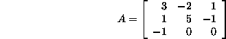
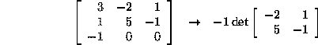
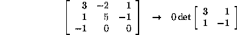
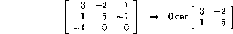
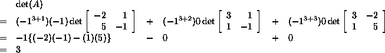
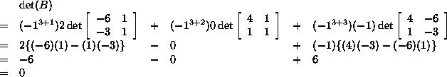
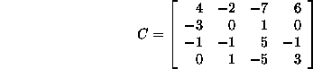

The third row has the most zero entries, so the matrix will
be multiplied about this row to find the determinant. The reason for
choosing this row will become clear below.
To find the determinant, you need to first find the
components that make up the determinant of the matrix. For each
element  in the chosen row i of a
in the chosen row i of a  matrix,
matrix,
 is multiplied by the determinant of the matrix without the
row i and the column j i.e. an
is multiplied by the determinant of the matrix without the
row i and the column j i.e. an  matrix.
matrix.
In this case, the first element is -1, and the  matrix is the original matrix without row 3 and column 1:
matrix is the original matrix without row 3 and column 1:

This is the first component for calculating det(A).
The other components are derived the same way:


Before adding the components together to find the
determinant, there is one extra factor that is necessary. Each
component has to be multiplied by the number  , where i and
j are the row and column, respectively, that contain the element from
the chosen row.
, where i and
j are the row and column, respectively, that contain the element from
the chosen row.
So when everything is put together:

So A has an inverse.
Note that since two of the elements in row three are 0, in calculating the determinant, two of the components can easily be removed, because they are 0.

The third row should be chosen since it has the most zero entries. In the same way as the previous question, the various components are derived, so:

B is singular, i.e. it does not have an inverse.

With Octave,
octave:1> C = [4 -2 -7 6; -3 0 1 0; -1 -1 5 -1; 0 1 -5 3]
octave:2> det(C)
you should get  = -82 . C is non-singular, since its determinant is not zero. So it has an inverse.
= -82 . C is non-singular, since its determinant is not zero. So it has an inverse.